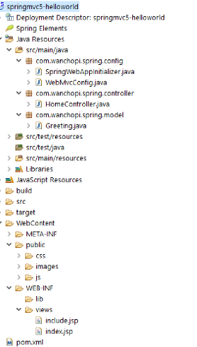
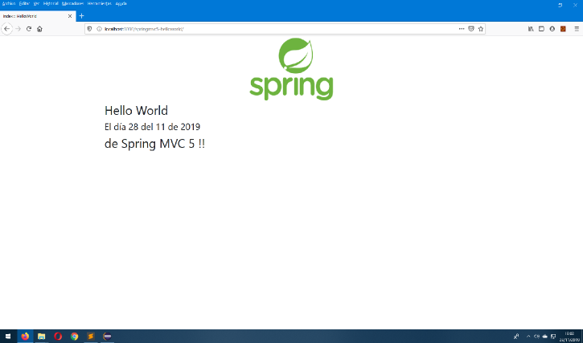

Inaguramos una serie de tutoriales referentes al framework Spring MVC. En esta serie de tutoriales como viene siendo habitual se verá muy poca teoría, lo que haré es poner enlaces que explican la teoría en cada una de las partes que componen dicho tutorial según se vaya avanzando en el mismo y por otra parte dejaré colgado en Github el código de los proyectos que vayamos viendo para que lo podaís descargar y probarlo.
Sería bueno que os pasarais por la página de spring para un primer vistazo.
Comenzamos.
Este proyecto simplemente consiste en configurar el esqueleto de un proyecto springmvc para posteriormemte ir añadiendo funcionalidades (esto se verá en otros tutoriales) y que se vaya pareciendo a algo medianamente serio.
Vemos como va a quedar el proyecto para que te sirva de referencia
Creamos un proyecto maven (hay cientos de ejemplos en la red de como crearlo) y añadimos las dependencias que necesitamos.
<dependencies>
<!-- https://mvnrepository.com/artifact/org.springframework/spring-webmvc -->
<dependency>
<groupId>org.springframework</groupId>
<artifactId>spring-webmvc</artifactId>
<version>5.1.5.RELEASE</version>
</dependency>
<!-- https://mvnrepository.com/artifact/javax.servlet/javax.servlet-api -->
<dependency>
<groupId>javax.servlet</groupId>
<artifactId>servlet-api</artifactId>
<version>3.0-alpha-1</version>
</dependency>
<!-- https://mvnrepository.com/artifact/javax.servlet/jstl -->
<dependency>
<groupId>javax.servlet</groupId>
<artifactId>jstl</artifactId>
<version>1.2</version>
</dependency>
</dependencies>
Pasamos a los archivos de configuración, configuramos en primer lugar el DispatcherServlet, para ello extendemos la clase AbstractAnnotationConfigDispatcherServletInitializer, quedando el fichero como sigue:
package com.wanchopi.spring.config;
import org.springframework.web.servlet.support.AbstractAnnotationConfigDispatcherServletInitializer;
/**
* Init app
* @author Wanchopi
*
*/
public class SpringWebAppInitializer extends AbstractAnnotationConfigDispatcherServletInitializer {
@Override
protected Class<?>[] getRootConfigClasses() {
return null;
}
@Override
protected Class<?>[] getServletConfigClasses() {
return new Class<?>[] { WebMvcConfig.class};
}
@Override
protected String[] getServletMappings() {
return new String[] { "/" };
}
}
Ahora pasamos a configurar Spring MVC, esto establecerá el soporte básico que necesitamos para un proyecto MVC
package com.wanchopi.spring.config;
import org.springframework.context.annotation.Bean;
import org.springframework.context.annotation.ComponentScan;
import org.springframework.context.annotation.Configuration;
import org.springframework.web.servlet.config.annotation.EnableWebMvc;
import org.springframework.web.servlet.config.annotation.ResourceHandlerRegistry;
import org.springframework.web.servlet.config.annotation.WebMvcConfigurer;
import org.springframework.web.servlet.view.InternalResourceViewResolver;
/**
* Configure Spring MVC
* @author Wanchopi
*
*/
@Configuration
@EnableWebMvc
@ComponentScan(basePackages = "com.wanchopi.spring")
public class WebMvcConfig implements WebMvcConfigurer {
@Bean(name = "viewResolver")
public InternalResourceViewResolver getViewResolver() {
InternalResourceViewResolver viewResolver = new InternalResourceViewResolver();
viewResolver.setPrefix("/WEB-INF/views/");
viewResolver.setSuffix(".jsp");
return viewResolver;
}
@Override
public void addResourceHandlers(ResourceHandlerRegistry registry) {
registry.addResourceHandler("/public/**").addResourceLocations("/public/");
}
}
Dejo un enlace interesante que explica todo esto con detenimiento pinchar aquí
Pasamos a crear una pijada de modelo solo a modo de ejemplo. Lo iremos complicando en sucesivos tutoriales.
package com.wanchopi.spring.model;
/**
* Model
* @author Wanchopi
*
*/
public class Greeting {
private String message;
private String date;
/**
* @return the message
*/
public String getMessage() {
return message;
}
/**
* @param message the message to set
*/
public void setMessage(String message) {
this.message = message;
}
/**
* @return the dateTime
*/
public String getDate() {
return date;
}
/**
* @param dateTime the dateTime to set
*/
public void setDate(String date) {
this.date = date;
}
}
Y el controlador de la aplicación. Anotamos la clase con la anotación @Controller para que Spring lo registre, inyectamos el modelo con la anotación @Autowired y al único método del controlador le ponemos la anotación @RequestMapping, anotación que se encarga de relacionar un método con una petición http. Señalar que el nombre del método puede ser ei que queramos, pero combiene que sea un nombre indentificativo para que esté claro lo que hace.
package com.wanchopi.spring.controller;
import java.time.LocalDateTime;
import org.springframework.beans.factory.annotation.Autowired;
import org.springframework.stereotype.Controller;
import org.springframework.ui.Model;
import org.springframework.web.bind.annotation.RequestMapping;
import com.wanchopi.spring.model.Greeting;
/**
* Spring MVC Controller
* @author Wanchopi
*
*/
@Controller
public class HomeController {
@Autowired
private Greeting greeting;
@RequestMapping("/")
public String home(Model model) {
// code ...
Greeting greeting = new Greeting();
greeting.setMessage("Hello World");
int day = LocalDateTime.now().getDayOfMonth();
int month = LocalDateTime.now().getMonthValue();
int year = LocalDateTime.now().getYear();
String date = day + " del " + month + " de " + year;
greeting.setDate(date);
model.addAttribute("greeting", greeting);
return "index";
}
}
Y por último después de cargar las librerías habituales (bootstrap, jQuery, etc...), y las imagenes que necesitemos, creamos una vista .jsp.
<%@ taglib prefix="c" uri="http://java.sun.com/jsp/jstl/core" %>
<!DOCTYPE html>
<html lang="es">
<head>
<meta charset="utf-8">
<title>index :: HelloWorld</title>
<link rel="stylesheet" href="public/css/bootstrap.min.css">
<link rel="stylesheet" href="public/css/font-awesome.min.css">
</head>
<body>
<div class="container">
<div class="row">
<div class="col-lg-12" align="center">
<img alt="logo" src="public/images/logo.png">
</div>
<div class="col-lg-12">
<h2>${greeting.message}</h2>
<h4>El día ${greeting.date}</h4>
<h2>de Spring MVC 5 !!</h2>
</div>
</div>
</div>
<!-- jQuery core JavaScript -->
<script src="public/js/jquery.min.js"></script>
<!-- Bootstrap core JavaScript -->
<script src="public/js/bootstrap.min.js"></script>
</body>
</html>
Desplegamos la aplicación, en mi caso, utilizo Tomcat 8.5 y la vemos funcionando.
Nota: En el código colgado en GitHub añado un test sobre el controlador, pero de momento eso lo obviamos hasta que veamos Spring Boot.